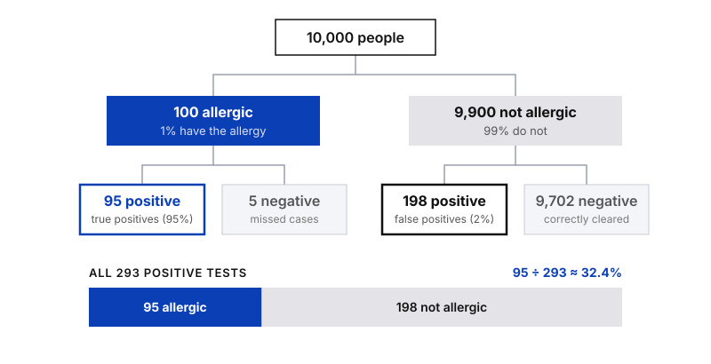

Statistics
Bayes’ Theorem

In Conditional Probability & Independence we asked how likely B is once A has happened. In practice the question often points the other way: you know how a test or a filter behaves, but you want to know what a result actually means. Bayes’ theorem lets you turn one conditional probability into the other, and it is the idea behind everything from medical tests to spam filters.
Prior and posterior probability
In Bayesian statistics, the prior probability is the probability of an event before new data is collected. The posterior probability is the updated probability of the event after the new data is taken into account. Bayes’ theorem is the rule for getting from one to the other.
Say a medical condition is related to age. The prior is the probability that a person has the condition. The posterior is the probability that a person has it, given that they belong to a certain age group.
The theorem
For any two events A and B, the probability of A given B equals the probability of B given A, multiplied by the probability of A, divided by the probability of B:
P(A | B) = P(B | A) × P(A) ÷ P(B)
Each part of the formula has a name:
- P(A) is the prior. What you believed before the new data.
- P(B | A) is the likelihood. How probable the data is if A is true.
- P(B) is the evidence. How probable the data is overall.
- P(A | B) is the posterior. The updated probability you want to calculate.
In words:
Posterior = Likelihood × Prior ÷ Evidence
One way to read it: you start with a prior belief, P(A), and use new data, the likelihood and the evidence, to turn it into a posterior, P(A | B). It also helps to see that the theorem links two conditional probabilities, "B given A" and "A given B". If you know one of them, Bayes’ theorem helps you find the other.
The expanded formula
Sometimes you do not know P(B), the evidence, so the basic formula cannot be used directly. The expanded version works it out from probabilities you usually do have. The evidence is the sum of all the ways B can happen: together with A, and together with "not A".
The easiest way to read the expanded formula is as a question: out of everyone who gets this result, how many are the real thing?
P(A | B) = true positives ÷ (true positives + false positives)
Each of the two groups is a simple "how common × how often" product:
- True positives = P(A) × P(B | A). How common A is, times how often the test catches it.
- False positives = P(not A) × P(B | not A). How common "not A" is, times how often the test raises a false alarm.
Written with symbols, that is the expanded formula:
P(A | B) = P(A) × P(B | A) ÷ [ P(A) × P(B | A) + P(not A) × P(B | not A) ]
Why test accuracy is tricky
No test is perfect, and it can be wrong in two ways:
False positive
Says yes, but it is no
The test indicates something is present when it is not.
Example: a healthy person is flagged
False negative
Says no, but it is yes
The test indicates something is absent when it is present.
Example: a real case is missed
Spam filters make both mistakes when they flag a normal email or let spam through, and medical tests do too. The expanded theorem takes both kinds of error into account.
Example: a peanut allergy test
Suppose the following is known about a peanut allergy test:
- Prevalence. 1% of people have the allergy, so P(allergy) = 0.01.
- True positive rate. The test is positive for 95% of people who have the allergy, so P(positive | allergy) = 0.95.
- False positive rate. The test is also positive for 2% of people who do not have the allergy, so P(positive | no allergy) = 0.02.
The question: if someone tests positive, how likely is it that they really have the allergy? We want P(allergy | positive), so A is "has the allergy" and B is "tests positive". Put the numbers into the expanded formula:
P(allergy | positive) = (0.01 × 0.95) ÷ [ (0.01 × 0.95) + (0.99 × 0.02) ]
= 0.0095 ÷ (0.0095 + 0.0198) = 0.0095 ÷ 0.0293 ≈ 0.324
So the probability that a person with a positive test has the allergy is only about 32.4%.
That looks surprising for a test that finds 95% of real cases. The reason is how rare the allergy is. Picture 10,000 people: 100 have the allergy and 95 of them test positive. The other 9,900 do not have it, but 2% of them, 198 people, test positive anyway. Out of 293 positive tests, only 95 are real.

Why the prior matters
A positive result moves the probability from 1% to 32.4%, which is a big update, but not the near-certainty many people expect. If the allergy were much more common, the same test would be far more convincing. The posterior always depends on both the evidence and where you started.
Summary of the formulas
| Version | Formula |
|---|---|
| Bayes’ theorem | P(A | B) = P(B | A) × P(A) ÷ P(B) |
| In words | Posterior = Likelihood × Prior ÷ Evidence |
| Expanded, in words | P(A | B) = true positives ÷ (true positives + false positives) |
| Expanded, with symbols (P(B) unknown) | P(A | B) = P(A) × P(B | A) ÷ [ P(A) × P(B | A) + P(not A) × P(B | not A) ] |
Key takeaway
Bayes’ theorem updates a prior belief into a posterior using new evidence, and its expanded form works even when P(B) is not known, while accounting for false positives and false negatives. Always ask how rare the event is before trusting a positive result. It is the foundation of Bayesian statistics, which data professionals use in fields from artificial intelligence to medical testing.